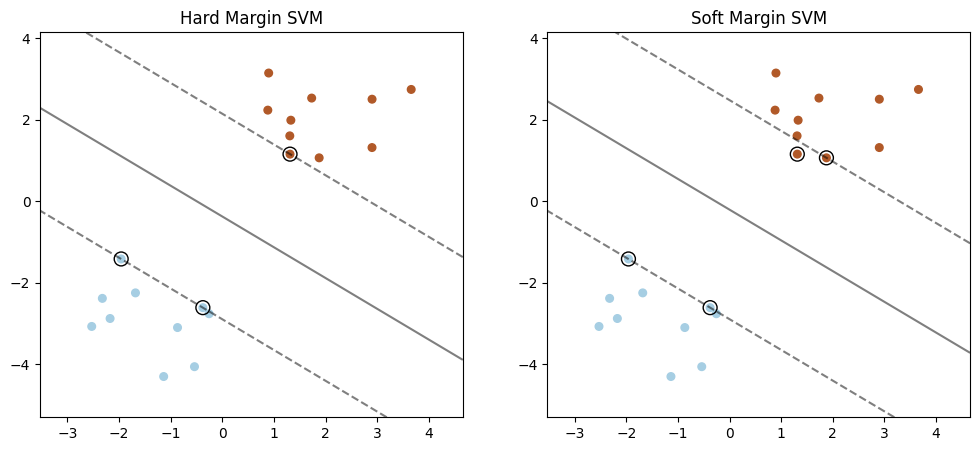
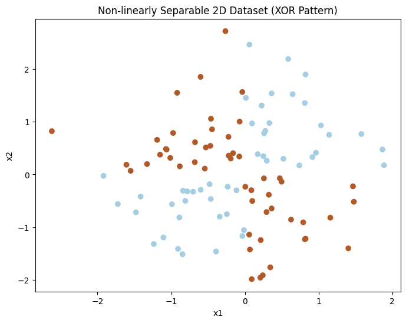

Contributors: Dr. Ahmad Mustafa, Dr. Motaz Alfarraj, Dr. Ashraf Alattar, Dr. Chen Zhou
Teaching Assistants with remarkable contributions include: Kuo-Wei Lai, Wuyang Du, Shiva Mahato, Michael Zhou, Ninghan Zhong
Disclaimer: All content of these notes are part of this course at Georgia Tech. Any re-use or distribution is not permitted without pre-approved permission. All these notes belong to, created by, and copyrighted for Ghassan AlRegib and Mohit Prabhushankar, Georgia Tech, 2021–2028.
License: These lecture notes are licensed under the Creative Commons Attribution-NonCommercial-ShareAlike 4.0 International License.
Errata: Please submit any errata you find using the following form: Errata Form for FunML Textbook or visit: https://forms.office.com/r/fbg9dMWPgY
1.1 Lecture Objectives
Last lecture, we reviewed Naïve Bayes before covering Linear Classifiers and Logistic Regression. In this lecture we will summarize and finish talking about Logistic Regression, briefly provide a high-level overview of Decision Trees, and talk about Support Vector Machines (SVMs). The main focus of this lecture will be on SVMs.
1.2 Logistic Regression
1.2.1 Summary
Last time we covered Logistic Regression, which is a parametric model. The reason why it is a parametric model is because you have access to parameters w (weight) and b (bias). These are parameters that you have defined that you must learn with the help of a loss function.
Definition:
Given feature vector \(\mathbf{x} = [x_1, \dots, x_p]^T\), the logistic regression classifier estimates the posterior \(P(y \mid \mathbf{x})\) with sigmoid function \(\sigma(\mathbf{z})\): \[\begin{aligned} \mathbf{z} = \mathbf{w}^T \mathbf{x} + b \\ P(y = 1 \mid \mathbf{x}) &= \sigma(\mathbf{z}) \\ P(y = 0 \mid \mathbf{x}) &= 1 - \sigma(\mathbf{z}) \end{aligned}\] where \(\mathbf{w} = [w_1, \dots, w_p]^T\) is weight, and \(b\) is bias.
Sigmoid function: \[\begin{aligned} \sigma(z) &= \frac{1}{1 + e^{-z}}. \end{aligned}\] Based on the data, we adjust the shape and horizontal position of the sigmoid function by learning the weight vector \(\mathbf{w}\) and bias \(b\).

Ultimately, the decision boundary of logistic regression corresponds to the hyperplane \(\mathbf{w}^T\mathbf{x} + b = 0\), which separates the data in feature space.
Simple Classification Rule: \[y = \begin{cases} 1 & P(y = 1|x) > 0.5, \\ 0 & \textit{otherwise}. \end{cases}\] This is an example of a simple classification rule based on simple data grouped at \(y = 0\) and \(y = 1\). In this case, thresholding at 0.5 corresponds to the hyperplane \(\mathbf{w}^T\mathbf{x} + b = 0\).
Key intuition. Logistic regression is a linear classifier in feature space: it predicts using the sign of \(\mathbf{w}^T\mathbf{x}+b\) and then converts that score into a probability using the sigmoid. The value \(\mathbf{w}^T\mathbf{x}+b\) is a signed distance-like score: it increases when \(\mathbf{x}\) moves in the direction of \(\mathbf{w}\), and decreases when moving opposite to \(\mathbf{w}\). Feature normalization matters because rescaling one feature changes how much it contributes to this score.
The overall negative log-likelihood (NLL) cost function, also known as the cross-entropy loss for logistic regression, is given by: \[LL(\mathbf{x}, y) = -\frac{1}{N}\sum_{i=1}^{N} \Big[ y_i \log \hat{p}_i + (1-y_i)\log(1-\hat{p}_i) \Big],\] where \[\hat{p}_i = \sigma(\mathbf{w}^T\mathbf{x}_i + b)\] is the model’s predicted probability that the \(i\)-th sample belongs to class \(y=1\), \(N\) is the number of training samples, and \(y_i\in\{0,1\}\) is the true label.
This loss function penalizes confident but incorrect predictions and is commonly referred to as the Binary Cross Entropy (BCE) loss in binary classification settings.
We learned the loss function from a gradient descent algorithm: \[\theta = \{w,b\}\] \[\theta(t + 1) = \theta(t) - \alpha\frac{\partial{LL(x,y,\theta)}}{\partial\theta}\] With t representing time, at every instance we are able to move onto a new set of parameters by following a very simple rule: Some gradient of LL (personalized loss function) with respect to a parameter alpha. This parameter is defined as a step size or learning rate, which will be covered later in the course.
1.2.2 Example: Sentiment Classification
Let’s assume we want to predict the binary sentiment for the following movie review:
Input: “It’s hokey. There are virtually no surprises, and the writing is second-rate. So why was it so enjoyable? For one thing, the cast is great. Another nice touch is the music. I was overcome with the urge to get off the couch and start dancing. It sucked me in, and it’ll do the same to you."
Output: positive (1) or negative (0)
The goal of a Machine Learning algorithm is to classify whether this person liked the movie or not.
Let’s start by assuming that the sentiment is represented by 6 features: \(\mathbf{x} = [x_1, \dots, x_6]\)
| feature | description | value |
|---|---|---|
| \(x_1\) | count positive words | 3 |
| \(x_2\) | count negative words | 2 |
| \(x_3\) | \(\begin{cases} 1 & \text{if ``no" in text}, \\ 0 & \textit{otherwise} \end{cases}\) | 1 |
| \(x_4\) | count 1st and 2nd pronouns | 3 |
| \(x_5\) | \(\begin{cases} 1 & \text{if ``!" in text}, \\ 0 & \textit{otherwise} \end{cases}\) | 0 |
| \(x_6\) | log(word count) | ln(56) = 4.025 |
These features are intuitive:
reviews with lots of positive words are written by those who enjoy the movie, vice-versa for negative words
the word "no" in a review might entail negativity
reviews with lots of pronouns come from reviewers writing in first-person - which shows how much they liked the movie
usage of exclamation marks also has a positive connotation
lengthy reviews tend to be good
Let’s assume the weights and bias are: \[\mathbf{w} = [w_1, \dots, w_6]^T = [2.5,-5.0,-1.2,0.5,2.0,0.7]^T\] \[\mathbf{b} = 0.1\] Thus,
P( = 1|x) &= (w^Tx + b)&
&= ([2.5,-5.0,-1.2,0.5,2.0,0.7]^T[3,2,1,3,0,4.025]+0.1)&
&= 0.67&
P( = 0|x) &= 1 - (w^Tx + b) = 0.33&
It’s important to note that the weights and biases are already given in this test scenario. Ideally these weights and bias values are learned during training over thousands of reviews. The polarity of a weight indicates for which class (1 or 0) this feature is important for.
Example. Suppose we only keep two features: \(x_1=\) “positive word count” and \(x_2=\) “negative word count”. Let \(\mathbf{w}=[1,-2]^T\) and \(b=0\). For a review with \((x_1,x_2)=(3,1)\), the logit is \(z=\mathbf{w}^T\mathbf{x}+b = 1\cdot 3 + (-2)\cdot 1 = 1\), so \(\sigma(z)\approx 0.73\) and we predict a positive sentiment. If we instead scale \(x_2\) by a factor of 10 (e.g., due to inconsistent units), then the same review becomes \((3,10)\) and \(z=3-20=-17\), giving \(\sigma(z)\approx 0\). This illustrates why normalization/standardization can be critical.
1.2.3 Classifier Comparison Table
In the table above, there are several columns for each method we will cover in class:
Assumptions on Feature Distance: In most cases, we have not made any assumptions on the types of features except in Naïve Bayes. In Naïve Bayes, features are assumed to be conditionally independent in order to take the joint probability and marginalize it into two separate probabilities.
Feature Normalization: Required in most cases, with Decision Trees and Naïve Bayes being the main exceptions. In models like Logistic Regression and SVMs, feature scales directly affect the learned weights and the margin, so it is important to normalize the inputs. Common approaches include z-score standardization (subtract the mean and divide by the standard deviation) and min–max scaling (rescale features to a fixed range such as \([0,1]\)). Softmax, in contrast, is typically applied to model scores (logits) to convert them into a probability distribution, rather than to normalize raw input features.
Cost Function: Also known as the loss function. Logistic Regression uses BCE (Binary Cross Entropy Loss).
Regularization: Not covered much in lecture, there will be a homework problem going over this topic in depth.
Linear Classifier: This will be more clear when we cover Non-linear classifiers in later lectures.
Probabilistic View of Prediction: This is present in Logistic Regression (\(P(y|x)\)) as well as Naïve Bayes having a probabilistic distribution that we make assumptions on.
Generative/Discriminative: Almost everything that we will look at in classification will be discriminative, the exception being Naïve Bayes. The difference between discriminative and generative will be elaborated on later in the course. For now, discriminative can be thought of as having a goal to classify data, while generative seeks to understand the probability distribution of data coming in to create new data (e.g. ChatGPT, DALL-E).
Parametric/Non-parametric: If there is any kind of parameter involved with the framework (e.g. w, b) then it is parametric.
Overfitting: We will discuss this in detail when we cover Neural Networks.
Logistic regression finds a separating hyperplane by maximizing likelihood (equivalently minimizing cross-entropy). While this often yields good accuracy, there can be many hyperplanes with similar training accuracy. SVMs introduce a different principle: among all separating hyperplanes, prefer the one with the largest geometric margin, which tends to improve robustness and generalization. We will discuss this further in section 4.4.
1.3 Decision Trees
1.3.1 Overview
We will not look at decision trees in this course, you just need to know it exists. Decision trees are essentially if-else statements. The classification model has a tree-like structure that mimics rule-based human reasoning, and they can be used for both classification and regression.
1.3.2 Example: Weather Condition Case Study from Lecture 2
Recall this example from Lecture 2 where given several weather features, we were able to decide on whether you were allowed to play or not. Based on that information, you can create a decision tree.
| Outlook | Temp. | Humidity | Windy | Play |
|---|---|---|---|---|
| sunny | hot | high | false | no |
| sunny | hot | high | true | no |
| overcast | hot | high | false | yes |
| rainy | mild | high | false | yes |
| rainy | cool | normal | false | yes |
| rainy | cool | normal | true | no |
| overcast | cool | normal | true | yes |
| sunny | mild | high | false | no |
| sunny | cool | normal | false | yes |
| rainy | mild | normal | false | yes |
| sunny | mild | normal | true | yes |
| overcast | mild | high | true | yes |
| overcast | hot | normal | false | yes |
| rainy | mild | high | true | no |
[tab:decisiontree2]
The main difficulty in creating decision trees is knowing which variables are independent or non-independent. In this example, you can see that humidity is dependent on if it is sunny, and windy is dependent on if it is rainy. You can also see how your end result is independent of both humidity and windy if outlook is overcast.
1.4 Support Vector Machines (SVMs)
1.4.1 Overview
SVMs were one of the most researched topics back in the 1990’s and 2000’s due to the very nice mathematical theory behind it - it offers a good theoretical understanding of what the properties of classifiers are.
SVM Topics:
Linear Separating Hyperplanes
Maximal Margin Classifiers
Support Vector Classifiers
Support Vector Machines
Advantages and Disadvantages
1.4.2 Linear Separating Hyperplanes
If we have one-dimensional data, the simplest classifier is a single point (a threshold) on the real line. For two-dimensional data, the classifier is a line that separates points in the plane. For three-dimensional data, the classifier becomes a plane that separates points in space. This pattern continues in higher dimensions: for data in a \(P\)-dimensional feature space, the decision boundary is a \((P-1)\)-dimensional object called a hyperplane.
Assume our feature space is \(P\)-dimensional. A linear classifier in this space is represented by a hyperplane, which generalizes a line in 2D and a plane in 3D to higher dimensions. Given a feature vector \(\mathbf{x} = [x_1, x_2, \dots, x_P]^T \in \mathbb{R}^P\), we define a separating hyperplane by the equation \[b + w_1x_1 + \cdots + w_Px_P = 0, \qquad \text{or equivalently} \qquad \mathbf{w}^T\mathbf{x} + b = 0,\] where \(\mathbf{w} = [w_1,\dots,w_P]^T\) is the weight vector and \(b\) is the bias term. Writing the boundary in this form is convenient because it cleanly expresses the decision rule in terms of an inner product \(\mathbf{w}^T\mathbf{x}\), which is a standard operation in linear algebra for relating two vectors.
Geometrically, the vector \(\mathbf{w}\) is perpendicular (normal) to the hyperplane, meaning it points in the direction orthogonal to the decision boundary. The dot product \[\mathbf{w}^T \mathbf{x} = \|\mathbf{w}\| \, \|\mathbf{x}\| \cos(\theta)\] depends on the angle \(\theta\) between \(\mathbf{w}\) and \(\mathbf{x}\), and therefore measures how much the feature vector \(\mathbf{x}\) aligns with the normal direction \(\mathbf{w}\). In this sense, \(\mathbf{w}^T \mathbf{x}\) captures the signed projection of \(\mathbf{x}\) onto the normal vector, which is directly related to how far \(\mathbf{x}\) lies from the decision boundary along the orthogonal direction. Finally, note that \(\mathbf{w}\) can be any nonzero normal vector to the hyperplane; for simplicity in geometric interpretations, we sometimes assume that \(\mathbf{w}\) has unit norm.

Key intuition. For SVMs, \(\mathbf{w}^T\mathbf{x}+b\) is still a score, but SVMs care about how confidently points are separated. The margin is the empty “buffer zone” around the decision boundary. A larger margin typically improves robustness: small perturbations to \(\mathbf{x}\) are less likely to flip the label.
1.4.3 Maximal Margin Classifiers
In logistic regression, we only wanted high accuracy in separating data into its groups. SVMs have another goal: the width of the margin between the classifier and the data.
Suppose that our classifier is correctly able to classify test data given some kind of training data, and that the hyperplane can separate the training data perfectly according to their class labels. It is apparent in 4 that multiple possible hyperplanes satisfy these conditions. In this case, how do we determine the “best" one?
The maximal margin hyperplane (MMH) is the separating hyperplane that is furthest from the training data. The location of the MMH is dependent only on training observations that lie directly on the margin boundary (\(x_A, x_B\) and \(x_C\), a.k.a Support Vectors). The goal becomes finding an algorithm that can produce the best MMH. (Best being the highest width and highest accuracy).

1.4.4 Width of Maximal Margin Classifiers
Let’s try to write down the width of the margin as a function of something we know. We’ll change the equation as follows, to ensure no samples are within the margin M. To explicitly enforce a margin around the separating hyperplane, we modify the classification constraints. For a positive (class 1) example \(x^+\), we require \[\mathbf{w}^T x^+ + b \geq 1,\] while for a negative (class 2) example \(x^-\), we require \[\mathbf{w}^T x^- + b \leq -1.\] The appearance of \(+1\) and \(-1\) on the right-hand side, rather than \(0\), is intentional: it induces a margin of width 1 on each side of the decision boundary \(\mathbf{w}^T\mathbf{x} + b = 0\). As a result, no training samples are allowed to lie within this margin region, and the distance between the two supporting hyperplanes becomes directly tied to the magnitude of the weight vector \(\mathbf{w}\).

If \(x_A\) and \(x_B\) lie on the margin hyperplanes \(\mathbf{w}^T x + b = 1\) and \(\mathbf{w}^T x + b = -1\) respectively, then \(\mathbf{w}^T(x_A-x_B)=2\).
The left-hand side is also an inner product, which can be written as \(\| x_A - x_B \|\| w \|cos(0) = 2\)
The two supporting hyperplanes are \(\mathbf{w}^T\mathbf{x}+b=1\) and \(\mathbf{w}^T\mathbf{x}+b=-1\). The perpendicular distance between two parallel hyperplanes \(\mathbf{w}^T\mathbf{x}+b=c_1\) and \(\mathbf{w}^T\mathbf{x}+b=c_2\) is \[\frac{|c_1-c_2|}{\|\mathbf{w}\|}.\] Therefore, the (geometric) margin width is \[M = \frac{|1-(-1)|}{\|\mathbf{w}\|} = \frac{2}{\|\mathbf{w}\|}.\] If \(x_A\) and \(x_B\) are support vectors lying on the two margin hyperplanes, then \(\mathbf{w}^T(x_A-x_B)=2\). This implies that the projection of \(x_A-x_B\) onto the normal direction \(\mathbf{w}\) has length \(2/\|\mathbf{w}\|\), which equals the margin width.
Therefore, maximizing the margin \(M\) is equivalent to maximizing \(\frac{1}{\|\mathbf{w}\|}\), or, equivalently, minimizing \(\|\mathbf{w}\|\). Rather than directly minimizing the norm \(\|\mathbf{w}\|\), which leads to a non-smooth optimization problem, it is standard to instead minimize its squared norm \(\|\mathbf{w}\|^2\). This transformation does not change the location of the optimal solution, since the squared norm is a strictly increasing function of the norm, but it yields a smoother and more mathematically convenient objective. For further convenience, a factor of \(\frac{1}{2}\) is introduced, resulting in the objective \(\frac{1}{2}\|\mathbf{w}\|^2\), whose gradient with respect to \(\mathbf{w}\) is simply \(\mathbf{w}\). As a result, the problem of maximizing the margin reduces to minimizing \(\frac{1}{2}\|\mathbf{w}\|^2\) subject to the margin constraints imposed by the training data.
Example. If \(\mathbf{w}=[3,4]^T\), then \(\|\mathbf{w}\|=5\) and the margin width is \(M=\frac{2}{\|\mathbf{w}\|}=\frac{2}{5}=0.4\). If we instead found a separator with \(\mathbf{w}=[1,1]^T\) (smaller norm), then \(\|\mathbf{w}\|=\sqrt{2}\) and \(M=\frac{2}{\sqrt{2}}=\sqrt{2}\approx 1.41\), which is a much wider margin.
1.4.5 Accuracy of Maximal Margin Classifiers
We cannot minimize \(\|\mathbf{w}\|\) without constraints, because the trivial solution \(\mathbf{w} = \mathbf{0}\) gives no separating boundary. Let us define a linear boundary: \[\begin{aligned}
\mathbf{w}^T \mathbf{x} + b = 0\end{aligned}\] That is: \[\begin{aligned}
\begin{cases}
\mathbf{w}^T \mathbf{x} + b > 0, \text{ if } y = 1\\
\mathbf{w}^T \mathbf{x} + b < 0, \text{ if } y = -1
\end{cases}\end{aligned}\] And suppose that the samples can be separated further by a margin of 1 unit, so: \[\begin{aligned}
\begin{cases}
\mathbf{w}^T \mathbf{x} + b \geq 1, \text{ if } y = 1\\
\mathbf{w}^T \mathbf{x} + b \leq -1, \text{ if } y = -1
\end{cases}\end{aligned}\] Which can be written in a single equation as: \[y(\mathbf{w}^T \mathbf{x} + b) - 1 \geq 0\] \[\textbf{ or}\\
\] \[L(\mathbf{x}_i,y_i,\theta)
= \max\big(0,\,1-y_i(\mathbf{w}^T\mathbf{x}_i+b)\big)\]
The latter of which is known as Margin-Perceptron Cost (aka Hinge Loss), where the additional 1 prevents the trivial 0 solution. For the classifier to be correct we must satisfy the following two inequalities: \[\mathbf{w}^T \mathbf{x^+} + b \geq 1\] \[\mathbf{w}^T \mathbf{x^-} + b \leq -1\]
Combining both class constraints into a single condition yields: \[y_i(\mathbf{w}^T\mathbf{x}_i + b) \ge 1,\quad \forall i.\]
Or:
\[y_i(\mathbf{w}^T \mathbf{x_i} + b) - 1 \geq 0,\quad \forall i.\]
We now have a classifier that maximizes the margins subject to the fact that the accuracy is very high with these constraints: \[\min_{\mathbf{w}, b} \quad \frac{1}{2} \|\mathbf{w}\|^2\] \[\text{subject to} \quad y_i (\mathbf{w}^T \mathbf{x}_i + b) - 1 \geq 0, \quad \forall i\]
1.4.6 Optimization
We now have a constrained optimization objective, so we may use a Lagrange multiplier to find our cost function. The Lagrange multiplier will allow us to insert our constraint into our cost function as follows: \[L = \frac{1}{2}||\mathbf{w}||^2 - \sum_{i=1}^{N} \alpha_i\left[ y_i(\mathbf{w}^T \mathbf{x_i} + b) - 1\right]\]
We solve this by taking the gradient and setting it equal to 0 as follows: \[\frac{\partial L}{\partial \mathbf{w}} = \mathbf{w} - \sum_{i=1}^{N} \alpha_i y_i \mathbf{x_i} = 0 \rightarrow \mathbf{w} = \sum_{i=1}^{N} \alpha_i y_i \mathbf{x_i}\] \[\frac{\partial L}{\partial b} = -\sum_{i=1}^{N} \alpha_i y_i = 0 \rightarrow \sum_{i=1}^{N} \alpha_i y_i = 0\]
Plugging these values back into the equation and simplifying, we find: \[L = -\frac{1}{2}\sum_{i=1}^{N} \sum_{j=1}^{N} \alpha_i \alpha_j y_i y_j \mathbf{x^T_i} \mathbf{x_j} + \sum_{i=1}^{N} \alpha_i\]
At this point, it is helpful to clarify what this expression represents. The quantity \[\max_{\alpha}\;\; \sum_{i=1}^{N}\alpha_i \;-\;\frac{1}{2}\sum_{i=1}^{N}\sum_{j=1}^{N}\alpha_i\alpha_j\,y_i y_j\,\mathbf{x}_i^T\mathbf{x}_j\] is the dual objective for the hard-margin SVM (to be maximized over the Lagrange multipliers \(\alpha_i\) subject to \(\alpha_i\ge 0\) and \(\sum_i \alpha_i y_i=0\)). In other words, we choose \(\alpha\) to make the linear term \(\sum_i \alpha_i\) large, while the quadratic term penalizes overly large values of \(\alpha\) in a way that depends on:
the similarity between samples via \(\mathbf{x}_i^T\mathbf{x}_j\), and
the label agreement via \(y_i y_j\) (same label gives \(+1\), different labels gives \(-1\)).
Intuitively, the quadratic term discourages putting large weight (large \(\alpha\)) on many points that are highly similar in feature space, because this would increase the penalty. As a result, at the optimum, only a subset of training points typically receive nonzero \(\alpha_i\) values; these are the support vectors, and they are the only points that directly determine the separating hyperplane.
Once the optimal multipliers are found, the weight vector can be recovered as \[\mathbf{w} = \sum_{i=1}^{N} \alpha_i y_i \mathbf{x}_i.\] To classify a new unseen sample \(\mathbf{u}\), we compute the decision function \[\mathbf{w}^T\mathbf{u} + b,\] and predict class \(+1\) if it is positive and class \(-1\) if it is negative.
1.4.7 Soft Margin Classifiers
One issue with maximum margin classifiers is that a single data point can dramatically shift the boundary between classes. In most real-world scenarios, a perfect separation is not possible, so we can relax the constraints with a soft margin: \[\min_{\mathbf{w}, b, \xi} \quad \frac{1}{2} \|\mathbf{w}\|^2 + C \sum_{i=1}^{N} \xi_i\] \[\text{subject to} \quad y_i (\mathbf{w}^T \mathbf{x}_i + b) \geq 1 - \xi_i, \quad \xi_i \geq 0, \quad \forall i\]
Here, \(C > 0\) is the regularization (penalty) parameter, which controls the trade-off between maximizing the margin and penalizing margin violations through the slack variables \(\{\xi_i\}_{i=1}^N\). The term \(\sum_{i=1}^N \xi_i\) measures the total amount of margin violation across all training samples.
A larger value of \(C\) places a higher penalty on misclassification and margin violations, encouraging a smaller margin that more tightly fits the training data. Conversely, a smaller \(C\) allows more violations of the margin, resulting in a wider margin that may misclassify some training points but typically improves generalization to unseen data.
Key intuition. Think of \(C\) as “how expensive mistakes are.” Large \(C\) tries hard to fit the training data (narrower margin, fewer violations), while small \(C\) prefers a wider margin and is more tolerant of outliers/noisy labels.

Hard-margin SVMs assume that the data are perfectly linearly separable, meaning that even a single outlier can force a drastic shift in the decision boundary. Soft-margin SVMs relax this assumption by introducing slack variables \(\xi_i\), allowing some margin violations while controlling the trade-off between margin width and classification errors through the regularization parameter \(C\). When the data are fundamentally not linearly separable, we preserve the same optimization framework but replace inner products \(\mathbf{x}_i^T \mathbf{x}_j\) with a kernel function \(K(\mathbf{x}_i,\mathbf{x}_j)\), which corresponds to an implicit nonlinear feature mapping \(\phi(\cdot)\).
1.4.8 Non-linear Soft Margin Classifiers
In many real-world datasets, a linear classifier in the original input space is not sufficient to separate the data. Support Vector Machines address this limitation through the kernel trick, which implicitly maps the input data into a higher-dimensional feature space using a transformation \(\phi(\cdot)\), while avoiding the explicit computation of this mapping. Instead, learning depends only on the kernel function \[K(\mathbf{x}_i,\mathbf{x}_j) = \phi(\mathbf{x}_i)^T \phi(\mathbf{x}_j),\] which computes inner products in the transformed feature space.
Common examples of kernel functions include:
Polynomial kernel: \[K(\mathbf{x}_i,\mathbf{x}_j) = (\mathbf{x}_i^T \mathbf{x}_j + 1)^p\]
Gaussian kernel: \[K(\mathbf{x}_i,\mathbf{x}_j) = \exp\!\left(-\frac{1}{2\sigma^2} (\mathbf{x}_i-\mathbf{x}_j)^T(\mathbf{x}_i-\mathbf{x}_j)\right)\]
Radial Basis Function (RBF) kernel: \[K(\mathbf{x}_i,\mathbf{x}_j) = \exp\!\left(-\gamma (\mathbf{x}_i-\mathbf{x}_j)^T(\mathbf{x}_i-\mathbf{x}_j)\right)\]
Although these kernels induce nonlinear decision boundaries in the original input space, the classifier remains linear in the transformed feature space defined by \(\phi(\cdot)\). This is why SVMs with kernels are still referred to as linear classifiers in feature space, despite exhibiting highly nonlinear behavior in the input space.
1.4.9 Multi-Class SVMs
Standard Support Vector Machines are inherently binary classifiers, meaning they are designed to separate data into two classes. However, SVMs can be extended to handle multi-class classification problems by decomposing the task into multiple binary classification problems and then combining their outputs.
Two common strategies for multi-class SVMs are:
One-Versus-All (OvA): For a problem with \(K\) classes, \(K\) binary classifiers are trained, where each classifier distinguishes one class from all remaining classes. At prediction time, the classifier with the highest confidence score (e.g., largest margin) determines the predicted class.
One-Versus-One (OvO): A binary classifier is trained for every pair of classes, resulting in \(\frac{K(K-1)}{2}\) classifiers. Each classifier votes for one of the two classes it was trained on, and the class with the most votes is selected as the final prediction.
The choice between these strategies involves a trade-off between computational efficiency and classification accuracy, and is often determined by the number of classes and the size of the dataset.
1.5 Additional Details
1.5.1 Duality and Lagrange Multipliers
The concept of duality provides a framework for analyzing and solving optimization problems with constraints. For a given optimization problem, called the primal problem, the dual problem offers an alternative perspective that can sometimes simplify the solution process or provide deeper insights.
Consider a primal optimization problem in its standard form: \[\begin{aligned}
\min_{\mathbf{w}} \quad & f(\mathbf{w}) \\
\text{subject to} \quad & g_i(\mathbf{w}) \leq 0, \quad i = 1, \dots, m \\
& h_j(\mathbf{w}) = 0, \quad j = 1, \dots, p\end{aligned}\] where \(f(\mathbf{w})\) is the objective function to be minimized, \(g_i(\mathbf{w})\) are inequality constraints, and \(h_j(\mathbf{w})\) are equality constraints. To handle these constraints, we introduce Lagrange multipliers \(\alpha_i \geq 0\) for the inequality constraints and \(\lambda_j\) for the equality constraints. We then define the Lagrangian function \(\mathcal{L}(\mathbf{w}, \alpha, \lambda)\) as follows: \[\begin{aligned}
\mathcal{L}(\mathbf{w}, \alpha, \lambda) = f(\mathbf{w}) + \sum_{i=1}^{m} \alpha_i g_i(\mathbf{w}) + \sum_{j=1}^{p} \lambda_j h_j(\mathbf{w})\end{aligned}\] The dual problem is derived by maximizing the Lagrangian with respect to the dual variables \(\alpha\) and \(\lambda\), and minimizing it with respect to the primal variable \(\mathbf{w}\): \[\begin{aligned}
\max_{\alpha \geq 0, \lambda} \min_{\mathbf{w}} \mathcal{L}(\mathbf{w}, \alpha, \lambda)\end{aligned}\] This transformation can sometimes reveal properties of the problem that are not apparent in the primal formulation. Specifically, the difference between the primal and dual optimal values, known as the duality gap, can provide information about the nature of the solution. Under certain regularity conditions, known as the Karush-Kuhn-Tucker (KKT) conditions, the duality gap is zero, indicating that the primal and dual solutions are equivalent.
We observed this framework earlier for SVMs. The primal problem involved finding the optimal separating hyperplane by minimizing the norm of the weight vector \(\mathbf{w}\) subject to the margin constraints: \[\begin{aligned}
\min_{\mathbf{w}, b} \quad & \frac{1}{2} \|\mathbf{w}\|^2 \\
\text{subject to} \quad & y_i (\mathbf{w}^T \mathbf{x}_i + b) \geq 1, \quad i = 1, \dots, N\end{aligned}\] The corresponding Lagrangian was given by: \[\begin{aligned}
\mathcal{L}(\mathbf{w}, b, \alpha) = \frac{1}{2} \|\mathbf{w}\|^2 - \sum_{i=1}^{N} \alpha_i [y_i (\mathbf{w}^T \mathbf{x}_i + b) - 1]\end{aligned}\] where \(\alpha_i \geq 0\) were the Lagrange multipliers associated with the margin constraints.
To find the dual problem, we maximized the Lagrangian with respect to \(\alpha\) after minimizing with respect to \(\mathbf{w}\) and \(b\): \[\begin{aligned}
\max_{\alpha \geq 0} \quad & \sum_{i=1}^{N} \alpha_i - \frac{1}{2} \sum_{i=1}^{N} \sum_{j=1}^{N} \alpha_i \alpha_j y_i y_j \mathbf{x}_i^T \mathbf{x}_j \\
\text{subject to} \quad & \sum_{i=1}^{N} \alpha_i y_i = 0\end{aligned}\] Refer back to the section on to see how this dual problem was solved.
1.6 Q&A Section
Consider the two figures below:

The left figure shows a dataset with a hard margin SVM classifier, while the right figure shows the same dataset with a soft margin SVM classifier.
Now, imagine introducing an outlier close to the decision boundary but on the incorrect side of it.

Which classifier will better handle the outlier, and why?
Hard Margin SVM: Because it maximizes the margin, it will automatically adjust the decision boundary to accommodate the outlier, resulting in a better separation of classes.
Soft Margin SVM: Because it allows some misclassification, it will tolerate the outlier and not drastically change the decision boundary, leading to a more stable classification.
Hard Margin SVM: Because it doesn’t allow misclassification, it will better manage the outlier by pushing it to the correct side of the decision boundary.
Soft Margin SVM: Because it uses a nonlinear kernel, it will correctly classify the outlier without affecting the other data points.
Solution: The correct answer is B) Soft Margin SVM.
The soft margin SVM is designed to allow some misclassification or margin violations, which makes it more robust in the presence of outliers. When an outlier is introduced near the decision boundary but on the incorrect side, the soft margin SVM can tolerate this outlier without significantly altering the decision boundary. This is due to the introduction of slack variables \(\xi_i\) in the optimization problem, allowing some points to fall within the margin or even be misclassified: \[\min_{\mathbf{w}, b, \xi} \quad \frac{1}{2} \|\mathbf{w}\|^2 + C \sum_{i=1}^{N} \xi_i\] \[\text{subject to} \quad y_i (\mathbf{w}^T \mathbf{x}_i + b) \geq 1 - \xi_i, \quad \xi_i \geq 0, \quad \forall i\] The term \(C \sum_{i=1}^{N} \xi_i\) penalizes the slack variables, balancing the margin width and the tolerance for misclassified points. A smaller \(C\) allows for a wider margin and more tolerance for outliers, resulting in a more stable model in the presence of noise or misclassified points.
In contrast, the hard margin SVM does not allow any misclassification, so introducing an outlier forces the SVM to adjust the decision boundary to perfectly classify all points, including the outlier. This can lead to significant changes in the decision boundary, potentially resulting in overfitting and poor generalization.

For the next few questions, we’ll be looking at the kernel trick. Let’s consider the following dataset:

Notice that the data is not linearly separable. Now we can either use a nonlinear classifier, or we could introduce nonlinearity into the data input itself. What if we transform the inputs into a higher dimension space, where some of the dimensions introduce nonlinearity? For example,
\[\phi: \mathbb{R}^2 \rightarrow \mathbb{R}^3 \quad \text{with} \quad (x,y) \mapsto (x,y,xy)\]

Now we can fit a linear boundary (a plane) to separate the data. Great, but what if we start in a higher dimension \(d\)?
Given a \(d\)-dimensional input, how many possible nonlinear interaction terms can be introduced in the transformation?
\(2^d\)
\(d^2\)
\(\binom{d}{2}\)
\(d \times (d-1)\)
Solution: The correct answer is \(\textbf{a) } 2^d\).
A subset-product feature is formed by choosing any subset of the \(d\) input dimensions and multiplying the chosen coordinates together. For each dimension, we have two choices: include it or exclude it from the product. Therefore, the total number of possible subset-products is \(2^d\) (including the empty subset, which corresponds to the constant feature \(1\)). This exponential growth is one reason explicit feature expansion becomes infeasible in high dimensions, and motivates using kernels to compute these inner products implicitly.
But do we actually need to compute the transformations? Recall the loss function we derived from the original optimization problem:
\[L = -\frac{1}{2}\sum_{i=1}^{N} \sum_{j=1}^{N} \alpha_i \alpha_j y_i y_j \mathbf{x^T_i} \mathbf{x_j} + \sum_{i=1}^{N} \alpha_i\]
It turns out that if we modify the original optimization problem to:
\[\min_{\mathbf{w}, b} \quad \frac{1}{2} \|\mathbf{w}\|^2 \\ \] \[\text{subject to} \quad y_i (\mathbf{w}^T \phi(\mathbf{x}_i) + b) - 1 \geq 0, \quad \forall i\]
Then the resulting dual problem and corresponding loss function involve the kernel \(K(\mathbf{x}_i, \mathbf{x}_j) = \phi(\mathbf{x}_i)^T \phi(\mathbf{x}_j)\):
\[L = -\frac{1}{2} \sum_{i=1}^{N} \sum_{j=1}^{N} \alpha_i \alpha_j y_i y_j K(\mathbf{x}_i, \mathbf{x}_j) + \sum_{i=1}^{N} \alpha_i\]
So all we care about computing is the kernel \(K(\mathbf{x}_i,\mathbf{x}_j)\). As an example, what is the kernel corresponding to the following input mapping (\(\phi:\mathbb{R}^2\rightarrow\mathbb{R}^6\))?
\[\phi(\mathbf{x}) = (x_1^2, \sqrt{2}x_1x_2, x_2^2, \sqrt{2}x_1, \sqrt{2}x_2, 1)\]
\(K(\mathbf{x}_i,\mathbf{x}_j) = (\mathbf{x}_i^T \mathbf{x}_j)^2\)
\(K(\mathbf{x}_i,\mathbf{x}_j) = (\mathbf{x}_i^T \mathbf{x}_j + 1)^2\)
\(K(\mathbf{x}_i,\mathbf{x}_j) = \sqrt{(\mathbf{x}_i^T \mathbf{x}_j + 1)}\)
\(K(\mathbf{x}_i,\mathbf{x}_j) = (\mathbf{x}_i^T \mathbf{x}_j + 1)\)
Solution: The correct answer is \(\textbf{b) } K(\mathbf{x}_i,\mathbf{x}_j) = (\mathbf{x}_i^T \mathbf{x}_j + 1)^2\).
To see why this is true, consider the expansion: \[\begin{aligned} \phi(\mathbf{x}_i)^T \phi(\mathbf{x}_j) &= x_{i1}^2x_{j1}^2 + \sqrt{2}x_{i1}x_{i2}\sqrt{2}x_{j1}x_{j2} + x_{i2}^2x_{j2}^2 + \sqrt{2}x_{i1}\sqrt{2}x_{j1} + \sqrt{2}x_{i2}\sqrt{2}x_{j2} + 1 \\ &= x_{i1}^2x_{j1}^2 + 2x_{i1}x_{i2}x_{j1}x_{j2} + x_{i2}^2x_{j2}^2 + 2x_{i1}x_{j1} + 2x_{i2}x_{j2} + 1 \\ &= (x_{i1}x_{j1} + x_{i2}x_{j2} + 1)^2 \\ &= (\mathbf{x}_i^T \mathbf{x}_j + 1)^2\end{aligned}\]
Notice that \(K(\mathbf{x}_i, \mathbf{x}_j)\) is much easier to compute directly than computing the dot product of the transformed vectors separately.
(Conceptual) Logistic Regression and a linear SVM can both produce linear decision boundaries of the form \(\mathbf{w}^T\mathbf{x}+b=0\). What is the main difference in what they optimize?
Logistic Regression maximizes the geometric margin; SVM maximizes likelihood.
Logistic Regression minimizes cross-entropy (negative log-likelihood); SVM maximizes the margin (equivalently minimizes \(\|\mathbf{w}\|\) with margin constraints).
Logistic Regression requires kernels; SVM cannot use kernels.
Logistic Regression only works for separable data; SVM works for all data.
Solution: The correct answer is B).
Logistic Regression fits probabilities by minimizing cross-entropy (negative log-likelihood). Hard/soft-margin SVMs instead choose a separator with a large margin (and with soft margin, trade off violations via \(C\)).
(Applied) You are training a linear SVM on a real dataset with a few mislabeled points (label noise). As you increase \(C\) from very small to very large, what behavior do you expect, and why?
Increasing \(C\) typically increases the margin width and improves robustness to noise.
Increasing \(C\) typically decreases the margin width and makes the classifier fit the training data more tightly, which can overfit noisy labels.
Increasing \(C\) has no effect because SVMs ignore misclassified points.
Increasing \(C\) forces the use of a nonlinear kernel, which always improves generalization.
Solution: The correct answer is B).
A larger \(C\) penalizes slack variables more, so the optimizer prefers fewer margin violations even if that means a narrower margin and a more complex boundary in feature space. With label noise/outliers, this can reduce robustness and hurt test performance.
References
See Figure 1 for the image sourced from ResearchGate. For more details, visit: https://www.researchgate.net/figure/Sketch-of-sigmoid-functions-with-ranged-parameter-pairs-i-i-and-i-i_fig1_319255915 [accessed 1 Sept 2024].
All other images sourced from the lecture video (Lecture 4: Classifiers (Logistic Regression & SVM) in Canvas.